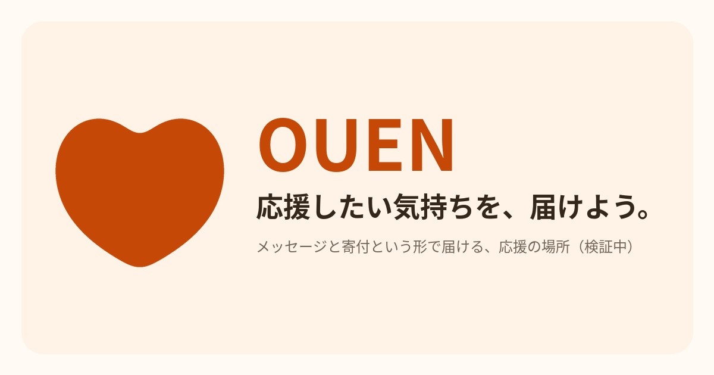

OUEN
OUEN
開発日誌｜2026年11月11日
公開から5日。正直な途中経過です
OUENは検証中のサービスです。この日誌では、作っている過程そのものを公開しています。
数字は、まだ小さいです
11月6日に検証版を公開してから5日が経ちました。見に来てくれる人は少しずついますが、「応援したい気持ちが、メッセージと寄付という形で届くのか」を判断できる量には、まだなっていません。正直に書くと、流入はほぼゼロからのスタートです。数字が小さいうちは小さいと書き、判断できる数字が貯まったら、その結果をそのまま公開します。
誤解の訂正：寄付を集めるサイトではありません
ときどき「寄付を集めるサイトなの？」と聞かれます。今のOUENでは、お金は一切動きません。載っているのは架空のお店と人だけです。やっているのは、「応援したいという気持ちの側から始まる仕組みが、受け取る側に気持ち悪がられずに受け入れられるか」という検証です。仕組みの考え方はOUENとはに、検証が終わるまでは実在のお店・団体は登場しないことも含めて書いてあります。
この5日で直したこと
公開した画面を全ページ見直す「総点検」をしました。見つかったのは、ページの隅に小さな表示崩れが残っていたこと、SNSでシェアされたときに表示される画像が一部ページで設定されていなかったことです。どちらも直しました。あわせて、サービスのロゴを決めました。ハートの中にOUENの文字を入れたもので、noteのアイコンとヘッダーも同じものにそろえてあります。公開してから直すのではなく、見直しの仕組みとして定期的にやっていきます。
これからやること
開発日誌は週に1回続けます。あわせて、応援・寄付・地域のお店について書かれている記事を毎週調べ、届く書き方を学んで日誌に反映させる取り組みを始めました。増やすのは宣伝ではなく、過程の公開です。
いまの画面を見てみる